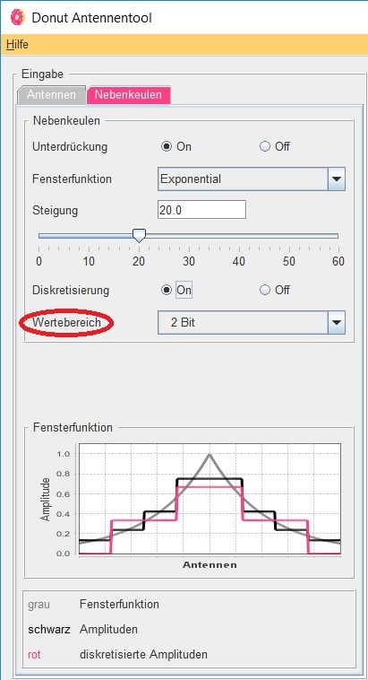

Donut Tutorial
Wertebereich

Die Abstufung der Diskretisierung erfolgt dabei in einem Vielfachen der 2-er Potenz. Dies hängt jedoch mit der Auflösung in Bit zusammen, mit welcher die Antennen angesteuert werden.